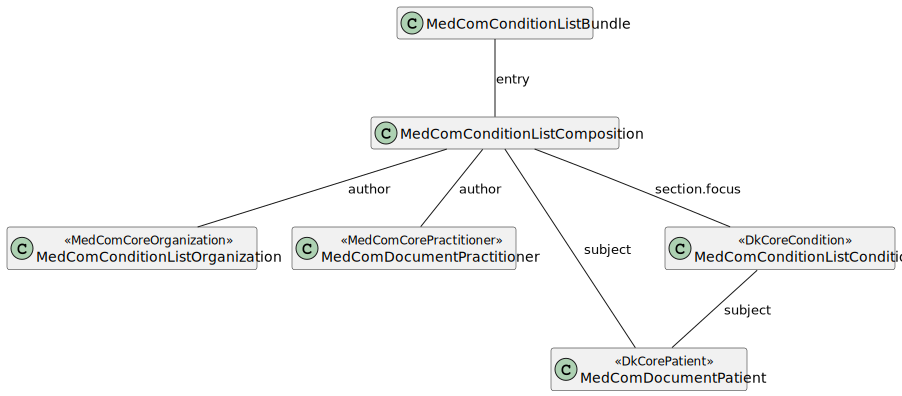

DK MedCom Condition List
1.0.1 - release
DK MedCom Condition List
1.0.1 - release
This page is part of the DK MedCom Condition List (v1.0.1: Release) based on FHIR (HL7® FHIR® Standard) R4. This is the current published version in its permanent home (it will always be available at this URL). For a full list of available versions, see the Directory of published versions
| Official URL: http://medcomfhir.dk/ig/conditionlist/ImplementationGuide/medcom.fhir.dk.conditionlist | Version: 1.0.1 | |||
| Active as of 2025-05-13 | Computable Name: MedComConditionList | |||
This implementation guide (IG) is provided by MedCom to define MedCom FHIR ®© ConditionList (Danish: Diagnoseoversigt) in document-based exchange of condition lists (Danish: diagnoseoversigt) in the Danish healthcare system. The project Shared Condition Overview (Danish: Deling af diagnoseoversigt) is owned by the Danish Health Data Agency (Danish: Sundhedsdatastyrelsen), to which MedCom has provided this standard, called ConditionList.
This IG contains profiles for MedCom ConditionList. The purpose of a ConditionList is to gather selected diagnoses into a condition list, thereby providing a well-defined overview of the patient's current health status and previously significant relevant diagnoses. The diagnoses included in the ConditionList are exclusively selected to be shared by the patient's general practitioner.
More information about the project Shared Condition Overview can be found here.
The structure of a ConditionList is depicted in the following diagram:

ConditionList follows the general MedCom FHIR Document model. This includes the resources Bundle, Composition, Organization, Patient and if relevant Practitioner. To hold information about the patient's condition(s), the resource Condition is also included.
The following sections describe the overall purpose of each profile.
MedComConditionListBundle is used as the Bundle profile for the standard. The Bundle profile acts as the container for all included resources and they must all be referenced from the Bundle.entry element, which is illustrated in the examples.
MedComConditionListComposition creates the structure of the document. It is specifically designed for structuring patients' diagnoses in ConditionList, inheriting from MedComDocumentComposition. The key differences are: the Composition.type is fixed to "Problem list - Reported" to standardize the document type; the Composition.title must be the following in Danish: "Diagnoseoversigt for 'CPR-nummer'"; and the Composition.section.entry is restricted to reference MedComConditionListCondition.
MedComConditionListCondition is the profile that specifies each diagnosis in a ConditionList. It inherits from DkCoreCondition and further restricts the profile, for example is only codes from SKS-D or ICPC-2-DK that is allowed in the standard.
MedComDocumentPatient describes the basic requirements for information about citizens and patients when exchanging a document. The profile inherits from DkCorePatient and further limit the requirements, e.g. may documents only be exchanged for patients with a CPR-number. It is not allowed to add a replacement-CPR (Danish: erstatningsCPR), as this is not supported in the infrastructure. To limit the MustSupport elements, this profiles does not inherit from MedComCorePatient.
MedComDocumentOrganization is a profile representing Danish healthcare organizations that acts as the author institution in FHIR Documents. The profile inherits from MedComCoreOrganization. It allows for an additional identifier, called "Ydernummer".
MedComDocumentPractitioner represents the health care professional that acts as the author person. The profile inherits from MedComCorePractitioner and further requires a given and family name to be present.
This profil must not be exchanged but can be used for internal validation of the metadata associated with a document, as the DocumentReference contains the same information as the IHE XDS metadata standard. Metadata used for exchange of ConditionLists must obey to IHE XDS metadata standard. This can be done by mapping the content of metadata to the DocumentReference and validating this against the IG.
A ConditionList includes several timestamps. These timestamps are present in the profiles MedComConditionListBundle, MedComConditionListComposition and MedComConditionListCondition. They have different purposes:
The 2nd example includes all the above timestamps.
The examples page different examples of the ConditionList standard. Each example is accompanied by a short description of the example.
On MedCom Terminology IG all referenced CodeSystem and ValueSets developed by MedCom can be found.
This IG has a dependency to the MedCom Core IG, MedCom FHIR Document IG and DK-core v. 3.2.0, where the latter is defined by HL7 Denmark.
Content in this IG can be downloaded in npm format under Download. This can be used to validate local FHIR profiles against.
On the introduction page for ConditionList the following documentation can be found:
MedComs FHIR profiles and extension are managed in GitHub under MedCom: Source code
A description of governance concerning change management and versioning of MedComs FHIR artefacts, can be found on the link.
In the Quality Assurance report (QA-report) for this IG, there is an error with the following description: 'Reference is remote which isn’t supported by the specified aggregation mode(s) for the reference (bundled)'. The error occurs when creating instances of the Composition profile, and is due to some elements having a Bundled flag {b}. However, the referenced profiles are not included in a Bundle, since the instance only represents a part of the entire document. This must not influence the implementation by IT-vendors.
MedCom is responsible for this IG.
If you have any questions, please contact fhir@medcom.dk or write to MedCom's stream in Zulip.